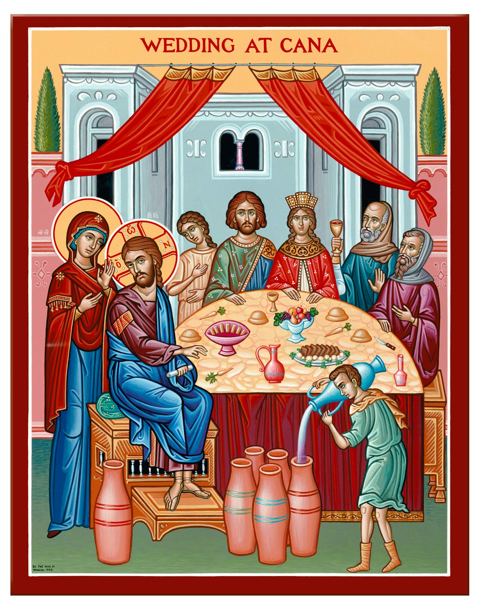
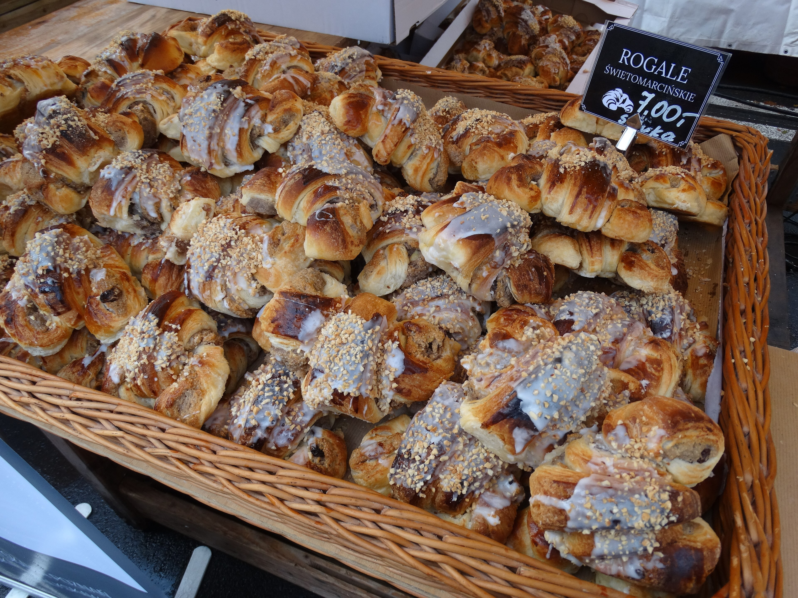
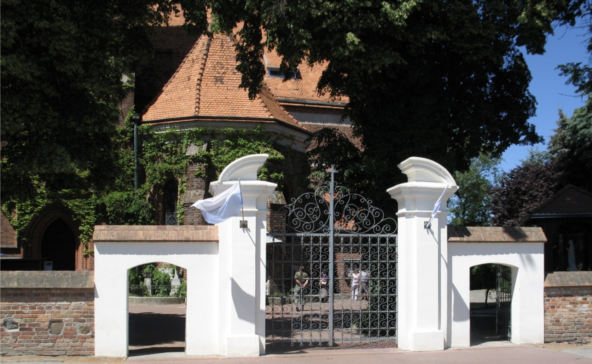
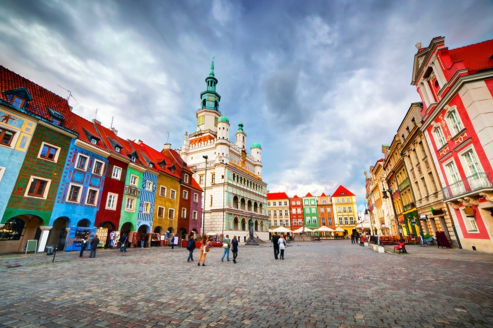

🚗 Approximately 30 minutes by car from the church to the venue.
Dress code
Black Tie
Black tie dress code. Hats are very welcome. Please leave the flip flops at home.
For families
There will be a room allocated for babies and children with a nanny present.

Holy Mass & Devotion
Masses and confessions in Poznań
Inner peace is always born as a result of the fulfillment of God's will, in which we have full confidence.
— Cardinal Stefan Wyszyński
The Drogowskaz app lists all Mass times and confessions in Poznań. We also invite you to visit the Basilica of St Joseph — he is interceding for us on this special day.
We guarantee accommodation for you on the night of the wedding.
Bedding and towels are included.
Breakfast is included.
Check-out is around 11:00 on Sunday.
Check-in time is not yet confirmed — please refresh this page closer to the date.
Recommended accommodation
Hotels near the venue
These hotels are recommended for additional nights beyond the wedding night. This is a bank holiday weekend in Poland — accommodation fills up fast and prices rise quickly. Book early for the best deal.
Hotel 500 — Conveniently located next to Poznań, easy to reach by car and well priced.
If you are struggling to find a good deal, please contact us — we have a few options up our sleeve.
Car rental
KaizenRent is our recommended car rental — reliable, cheap and available at all Polish airports. Three days costs around 180 PLN for a decent-sized vehicle. That is without insurance.
If you need transport from the church to the venue, please indicate this in your RSVP form. If possible, we recommend renting a car.
Venue locations
Church in Lusowo & Pałac Szczepowice
The map shows both venues and the route between them. Addresses and map links are in the schedule above.
Getting there
Airports
Poznań Airport is naturally very close to the venue.
Wrocław is a larger airport with very good connections to Poznań.
Szczecin and Bydgoszcz airports are also valid options.
Berlin Airport is also an option — FlixBus runs regularly from the airport to Poznań central bus station for around £22.
Train tickets
We recommend PKP or Trainline for purchasing train tickets.
Getting around Poznań
Bus tickets in Poznań can be purchased on the bus by card or sometimes cash. Use the JakDojade app for journey planning.

Food order
Do not leave without eating a St Martin Croissant
The rogale świętomarcińskie of Poznań are a protected regional pastry traditionally connected to St Martin's Day. They are rich, excessive and absolutely correct.
Their modern reputation comes from local baking traditions, white poppy seed filling and the city's strong attachment to culinary ceremony.
The potato has quietly shaped Polish cuisine and culture for centuries — visit the Potato Museum of Poznań if you want proof.

History
The Church in Lusowo
Lusowo is a village located approximately 16 km west of Poznań, on the north-eastern shore of Lake Lusowskie. Its recorded history dates back to the 12th century. In 1146, Prince Mieszko the Old, following his victory in the Battle of Poznań over his brother Władysław, granted Lusowo to the Poznań Chapter, which later transferred it to the endowment of the cathedral deanery.

History
Poznań
The baptism of Mieszko I, which marks a turning point in the history of Poland, is believed to have taken place on 14 April 966 in Poznań.
Poznań is one of the oldest and most economically active cities in Poland, with strong traditions in trade, manufacturing and engineering. It is also famously fond of its Saint Martin croissants.
Questions
Ask for practical help
Use the form below if you need help with travel, accommodation or anything else. The current address is a placeholder and can be swapped for a real mail form service later.
FAQ
Frequently asked questions
How do donations work?
Your attendance is already the best gift, but if you want to make a donation, we will be very grateful if it is in cash. In an envelope, Godfather style. Gold coins accepted.
What will the weather be like?
We have requested good weather (thank you Marguerite), however statistically, expect 25–30°C and sunshine. Sunglasses recommended.